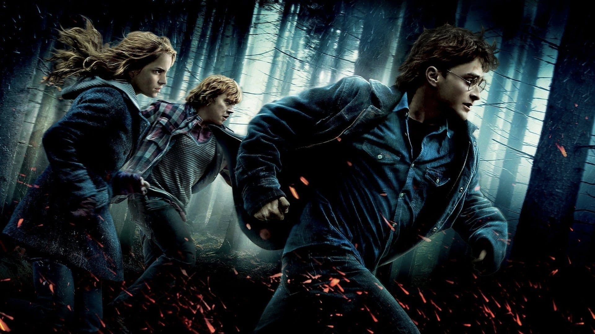
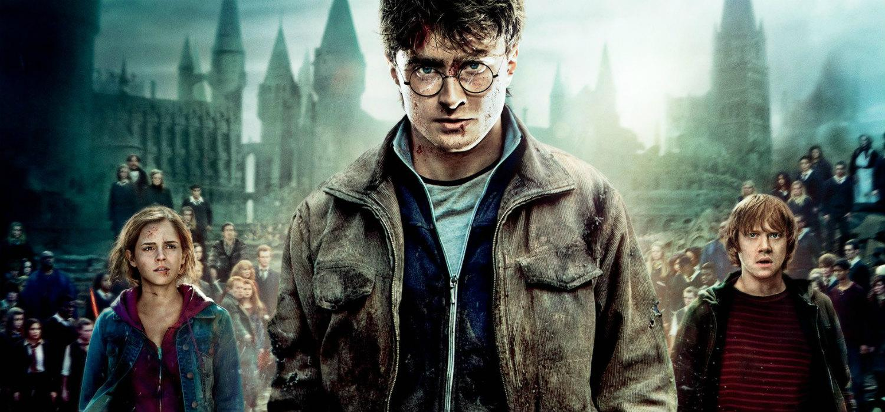

CUALQUIER MOMENTO ES BUENO PARA REMEMORAR LA SAGA DE HARRY POTTER. AHORA HBO Y NETFLIX NOS LO PONEN A TIRO AL COLGAR TODA LA SAGA AL COMPLETO. EN REVANCHA NOS SUMAMOS A LA CAUSA PARA HABLAR DEL FENÓMENO DEL MAGO INTERPRETADO POR DANIEL RADCLIFFE ENTRE 2001 Y 2011. AQUÍ UN RESUMEN DE HARRY POTTER PELÍCULA A PELÍCULA
HARRY POTTER Y LA PIEDRA FILOSOFAL (2001)
Se inicia la saga con un jovencísimo Radcliffe ejerciendo de Potter y de sus inseparables amigos Ron (Rupert Grimm) y Hermione (Emma Watson). Los tres se harán inseparables a lo largo de las aventuras. En esta primera, de carácter light, nos sirve para mostrar los entresijos de como funciona Hogwarts, con sus cuatro casas: Gryffindor, Slytherin, Ravenclaw y Hufflepuff. Nuestros inseparables amigos pertenecerán a Gryffindor, en tanto que el supuesto archienemigo -que después veremos que no es tanto- Draco Mallfoy, pertenece a Slytherin, donde suelen ir a parar las malas bestias.
El nivel de esta primera película es de notable alto. Probablemente la mejor de la saga puesto que nos recuerda al cine ochentero, con un film de aventuras donde la magia es protagonista pero los niños parecen “de goma”, una película amable en ese aspecto, interesante y con su dosis de intriga. Para los amantes de la saga antes de ser llevada a cines, un sueño hecho realidad.
HARRY POTTER Y LA CÁMARA SECRETA (2002)
Segundo curso. Harry Potter ya es alguien famoso tras lo sucedido en la primera aventura -sin revelar spoilers-. Aquí, en cierto modo, se pasará al Round 2 en cuanto a dificultad de los enemigos. Sin desvelar en exceso la trama, tener que vérselas con una serpiente tiene lo suyo. Como detalle importante, aquí la hermana pequeña de Ron -admiradora y fan de Potter- llega a la escuela, como no, a Gryffindor.
El nivel de este segundo largometraje no alcanza la altura del primero pero es un buen entretenimiento. Se mantiene la esencia del primero y los chicos aún son lo suficientemente jóvenes como para no verse corrompidos por el lado oscuro. Sirve para ir indagando algo más en la trama que mantendrá en vilo a los lectores/espectadores en futuras sagas… el que no se puede nombrar.
HARRY POTTER Y EL PRISIONERO DE AZKABAN (2004)
Dirigida por el ahora oscarizado Alfonso Cuarón, esta es una de las películas preferidas por la mayoría de fans de la saga. Y no es casualidad. La trama es algo más oscura si cabe con la llegada de los dementores, unos seres salvajes muy puñeteros que te quitan las ganas de todo. El tío y padrino de Harry Potter se ha escapado de Azkaban, teóricamente es él quien mató a los padres de Harry cuando este contaba días de vida. Sin embargo, y hasta ahí puedo leer, no es tan sencillo como parece.
Si tuviera que hacer un ranking de películas de la saga, El Prisionero de Azkaban muy probablemente entraría en el podio por méritos propios. Una buena historia, unos niños entrando de lleno en la adolescencia y una película que probablemente tenga el mayor equilibrio entre cine más infantil y oscuro de toda la saga. Además, dentro de que cada capítulo tiene una serie de animales fantásticos, puede que este sea el más interesante en cuanto a fauna.
HARRY POTTER Y EL CÁLIZ DE FUEGO (2005)
Atentos que vienen curvas. Se celebran unas competiciones la mar de chulas entre tres escuelas de magia para saber quién es el mago más macho del lugar y, a pesar de que no puede participar gente de menos de 17 años, el papel de Potter entra en el cáliz que decide quienes participan y ahí entra. Una serie de pruebas que pueden acabar con la vida de cualquiera si no sabe parar a tiempo y, a la vuelta de la esquina -alerta spoiler- el mismísimo Lord Voldemort, el que no se puede nombrar, quien mató a los padres de Harry Potter y le produjo la cicatriz que tiene.
La cuarta entrega de la saga concluye con el ecuador de películas -son ocho- y precisamente se aprovecha este detalle para lanzarnos de lleno al oscurantismo, al mal rollo que se adueñará de la saga Harry Potter a medida que avanzan las películas. Interesante cinta pero que se entretiene en exceso en una especie de Juegos Olímpicos que no acaban de hacer avanzar en exceso la historia. Eso sí, el premio final destapa el tarro de las esencias con la llegada del malo que dominará las futuras entregas.
HARRY POTTER Y LA ORDEN DEL FÉNIX (2007)
A pesar de los avisos de Dumbledore y Harry sobre la presencia del inombrable y su retorno al mundo de los vivos, desde el Ministerio de magia no hacen ni caso y, no contentos con ello, ponen una nueva profesora al mando, uno de esos personajes que desde el primer fotograma odiaremos a rabiar. En el apartado amoroso -como si fuera el horóscopo- vienen tiempos de cambios en Hogwarts en general pero en Potter en particular… le veremos dar su primer beso, y hasta ahí podemos leer.
La trama enrevesada de esta película no le sienta bien. He de reconocer que ha sido la única de la saga que se me hizo lenta y fácil de olvidar. Sin escenas de verdadera chicha nos sirve como excusa para la llegada de Voldemort al mundo de los vivos. Más allá de ese aspecto es un film fácil de olvidar en varios aspectos. Entretenido pero no mucho más allá, el peor de la saga.
HARRY POTTER Y EL MISTERIO DEL PRÍNCIPE (2009)
Ya tienen 16 años las criaturas. Aparece aquí la presencia del denominado principe mestizo, de quien no destriparemos identidad. Un personaje cuyo libro de pociones ayuda en más de un momento a un Harry que se embarca, junto a Dumbledore, en una aventura por poder acabar con Voldemort y su terrible presencia.
Film clave previo al desenlace que vendrá con el dúo de películas sobre las Reliquias de la Muerte. Una película que estrecha los lazos entre Harry Potter y Dumbledore, aunque ello nos aleje en parte del resto de personajes importantes de la saga como son Ron y Hermione. Conocemos más a fondo las intenciones de los personajes a medida que se acerca el final de la saga.
HARRY POTTER Y LAS RELIQUIAS DE LA MUERTE (PARTE I) (2010)

Séptimo y último curso. Esta vez, por primera vez en toda la saga, Hogwarts será lo menos importante, puesto que los tres aventureros deciden que lo que tienen que hacer para salvar a la humanidad es combatir a Voldemort, y la manera de hacerlo es encontrando las famosas reliquias de la muerte -que ya nos explican lo que son-. Ardua tarea que le encomendó Dumbledore a Harry Potter en el episodio anterior.
Irregular, pero interesante film, que pierde por culpa de no tener un final como tal. Es lo que le sucede a las películas que tienen una continuación, que la sensación de coitus interruptus que generan pueden más que lo que se ha visto. Voldemort y los suyos hacen tanto de las suyas que provocan que la saga sea cada vez más salvaje y sangrienta y esos niños que parecían ajenos a la dureza de la vida ahora son unos adolescentes dispuestos a morir por salvar el mundo mágico en el que viven.
HARRY POTTER Y LAS RELIQUIAS DE LA MUERTE (PARTE II) (2011)

Toda historia tiene un comienzo… y un final. Y aquí se junta todo. El camino que poco a poco se nos ha llevado a lo largo de siete capítulos y, sobretodo, a partir del final del cuarto episodio, tiene aquí el duelo final entre Harry Potter y Voldemort. ¿Acaso no esperabais ese final? Eso sí, entre medio una batalla a vida o muerte por defender Hogwarts de los opresores y más muertos de los que uno puede imaginar. Sin duda, la desolación se apodera de la batalla final.
La película más dura y madura de todas. El final que muchos esperaban y que esos mismos tampoco querían que llegase nunca. Las aventuras de Harry Potter terminan con la mejor aportación de David Yates -director de las cuatro últimas y de los dos episodios hasta la fecha de Animales fFtásticos- a la saga, y una de las películas que merecen entrar en el podio de lo mejor de Harry Potter. Sería la antítesis de la primera de la saga, pero ambas son realmente buenas en su terreno.